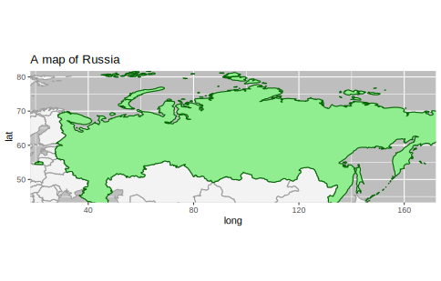
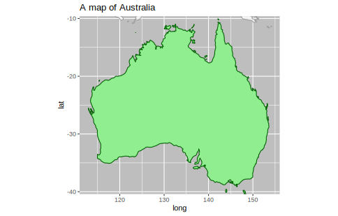

library(ggplot2)
map_data_es <- map_data('world')[map_data('world')$region == "Russia",]
ggplot() +
geom_polygon(data = map_data("world"),
aes(x=long, y=lat, group = group),
color = '#9c9c9c', fill = '#f3f3f3') +
geom_polygon(data = map_data_es,
aes(x=long, y=lat, group = group),
color = 'dark green', fill = 'light green') +
coord_map() +
coord_fixed(1.3,
xlim = c(25, 165),
ylim = c(45, 80)) +
ggtitle("A map of Russia") +
theme(panel.background =element_rect(fill = 'grey'))Coordinate system already present. Adding new coordinate system, which will replace the existing one.
library(maps) - это есть в коде, но не используется
map_data_es <- map_data('world')[map_data('world')$region == "Australia",]
ggplot() +
geom_polygon(data = map_data("world"),
aes(x=long, y=lat, group = group),
color = '#9c9c9c', fill = '#f3f3f3') +
geom_polygon(data = map_data_es,
aes(x=long, y=lat, group = group),
color = 'dark green', fill = 'light green') +
coord_map() +
coord_fixed(1.3,
xlim = c(113, 154),
ylim = c(-39, -11)) +
ggtitle("A map of Australia") +
theme(panel.background =element_rect(fill = 'grey'))Coordinate system already present. Adding new coordinate system, which will replace the existing one.